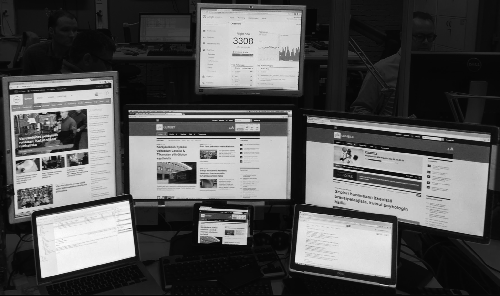

class: full, middle <div style="position: absolute; width: 100%; text-align: center; text-shadow: 1px 1px 1px #000; top: 30%;"> <h1 style="border:0; text-transform: uppercase;"><span class="highlight">Teemo Tebest<br />Data Journalist</span></h1> </div>  --- class: left, middle # <span class="highlight">Investigation</span> → A visual <span class="highlight">story</span> * <span class="highlight">Exercises</span> * and <span class="highlight">Examples</span> ```javascript if (Motivation === true) { if (Implemantion === true) { return Outcome } } ``` --- class: left, middle # How many <span class="highlight">threes</span>? <img src="img/kolmoset_1.png" alt="" style="width: 600px; style:inline;"/> --- class: left, middle # <span class="highlight">20</span> <img src="img/kolmoset_2.png" alt="" style="width: 600px; style:inline;"/> --- class: left, middle # <span class="highlight">Story</span> My year living on social welfare <p><span class="highlight">Motivation</span> To understand the social welfare system</p> <p><span class="highlight">Implementation</span> An interactive game</p> <p><span class="highlight">Outcome</span> NODA '19 winner</p> <div style="float: right"><a href="https://yle.fi/uutiset/3-10509829" target="_blank">» story</a></div><br /> <div style="float: right"><a href="https://dashboard.yle.fi/article/3-10509829" target="_blank">» numbers</a></div><br /> --- class: left, middle # NODA '19 winner, <span class="highlight">Why?</span> * The story showed <span class="highlight">how the system works</span> even for those not part of it * The implemantion succeeded in <span class="highlight">breaking prejudice</span> on people living on welfare * They didn't just take into account the money but also the quality of life --- class: left, middle # Challenges / Obstacles * The data updates during the process and the different scenarios were <span class="highlight">difficult to handle</span> * The scenarios were <span class="highlight">debateable</span> even between experts --- class: left, middle # <span class="highlight">Story</span> Hate speech and online shaming <p><span class="highlight">Motivation</span> Growing hatred on social media</p> <p><span class="highlight">Implementation</span> Mobile storytelling</p> <p><span class="highlight">Outcome</span> Reached younger audiences</p> <div style="float: right"><a href="https://yle.fi/aihe/artikkeli/2019/10/22/luuri-taynna-sontaa-ahdistavia-viesteja-ja-puheluita-tuntemattomista-numeroista" target="_blank">» story</a></div><br /> <div style="float: right"><a href="https://dashboard.yle.fi/article/20-293082" target="_blank">» numbers</a></div> --- class: left, middle # Reached younger audiences, <span class="highlight">Why?</span> * <span class="highlight">The interface</span> makes the story feel more personal * Everything is based on <span class="highlight">real stories</span> * The story made visible that the phenomena exists <span class="highlight">outside social media</span> * The implementation also gives a <span class="highlight">solution</span> --- class: left, middle # Challenges / Obstacles * Publication was <span class="highlight">tied with TV</span>'s schedule; also a positive * Some elements which were considered had to be removed * <span class="highlight">Polishing</span> in the story * To succeed the project had to be done by <span class="highlight">professionals</span> who were motivated --- class: center, middle # Thank you! <span class="highlight">Questions?</span> <img src="http://upload.wikimedia.org/wikipedia/commons/thumb/f/f1/Heart_coraz%C3%B3n.svg/1024px-Heart_coraz%C3%B3n.svg.png" alt="" style="width: 300px;"/><br /> Teemo Tebest, <a href="http://twitter.com/teelmo"><span class="highlight">@teelmo</span></a>